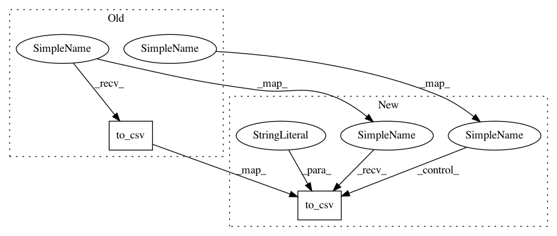

f72b08625855cf00d3238fa43955819e428378e9,notebooks/benchmark.py,,,#,16
Before Change
time_list = time_list + np.mean(time_mat, axis=0).tolist()
temp_df = pd.DataFrame(time_list).transpose()
temp_df.columns = df_columns
time_df = pd.concat([time_df, temp_df], axis=0)
roc_list = roc_list + np.mean(roc_mat, axis=0).tolist()
temp_df = pd.DataFrame(roc_list).transpose()
temp_df.columns = df_columns
roc_df = pd.concat([roc_df, temp_df], axis=0)
prn_list = prn_list + np.mean(prn_mat, axis=0).tolist()
temp_df = pd.DataFrame(prn_list).transpose()
temp_df.columns = df_columns
prn_df = pd.concat([prn_df, temp_df], axis=0)
// No need to save locally
// time_df.to_excel("time.xlsx", index=False)
// roc_df.to_excel("roc.xlsx", index=False)
// prn_df.to_excel("prc.xlsx", index=False)
time_df.to_csv("time.csv", index=False)
roc_df.to_csv("roc.csv", index=False)
prn_df.to_csv("prc.csv", index=False)
After Change
time_list = time_list + np.mean(time_mat, axis=0).tolist()
temp_df = pd.DataFrame(time_list).transpose()
temp_df.columns = df_columns
time_df = pd.concat([time_df, temp_df], axis=0)
roc_list = roc_list + np.mean(roc_mat, axis=0).tolist()
temp_df = pd.DataFrame(roc_list).transpose()
temp_df.columns = df_columns
roc_df = pd.concat([roc_df, temp_df], axis=0)
prn_list = prn_list + np.mean(prn_mat, axis=0).tolist()
temp_df = pd.DataFrame(prn_list).transpose()
temp_df.columns = df_columns
prn_df = pd.concat([prn_df, temp_df], axis=0)
// Save the results for each run
time_df.to_csv("time.csv", index=False, float_format="%.3f")
roc_df.to_csv("roc.csv", index=False, float_format="%.3f")
prn_df.to_csv("prc.csv", index=False, float_format="%.3f")
In pattern: SUPERPATTERN
Frequency: 3
Non-data size: 2
Instances
Project Name: yzhao062/pyod
Commit Name: f72b08625855cf00d3238fa43955819e428378e9
Time: 2019-03-29
Author: yuezhao@cs.toronto.edu
File Name: notebooks/benchmark.py
Class Name:
Method Name: